Phasmophobia es un videojuego de terror psicológico y supervivencia cooperativo, desarrollado y publicado por el estudio independiente británico Kinetic Games. Fue lanzado inicialmente el 18 de septiembre de 2020 en acceso anticipado para PC a través de Steam. El juego permite que uno o hasta cuatro jugadores asuman el papel de investigadores paranormales, cuyo trabajo consiste en explorar lugares embrujados, investigar actividades sobrenaturales y descubrir qué tipo de fantasma habita en cada ubicación. Su principal característica es la combinación de exploración, investigación y supervivencia. Los jugadores deben utilizar diferentes herramientas para encontrar evidencias, mientras intentan evitar que el fantasma los ataque. Además, cuenta con una ambientación de terror basada en sonidos realistas, iluminación y eventos paranormales que hacen que cada investigación sea diferente.
En Phasmophobia, los jugadores asumen el rol de investigadores paranormales que deben explorar diferentes ubicaciones para identificar qué tipo de fantasma las habita. Para lograrlo, utilizan herramientas especializadas que permiten detectar evidencias sobrenaturales, como cambios de temperatura, actividad electromagnética, escritura paranormal o apariciones. Durante la investigación, es importante observar el comportamiento del fantasma, encontrar su habitación y reunir las evidencias necesarias para identificarlo. Sin embargo, los jugadores también deben controlar su cordura y evitar las cacerías, ya que cada fantasma tiene habilidades y comportamientos diferentes. El objetivo es completar la investigación, identificar correctamente al fantasma y sobrevivir para regresar sanos y salvos.
El aspecto de un fantasma siempre es 1 entre los 11 sprites que tiene el juego; no es relativo a su tipo. Lo que determina que ente realmente es es la evidencia que deja y su manera de actuar.
Lento al empezar, pero cuando te ve acelera más rápido que cualquier otro. Y no puede matarte dentro de un escondite.
Elige a UN jugador al empezar la partida y solo va por él.
Si te mueves cerca, es de las más rápidas del juego. Si te quedas quieto, de las más lentas.
Empieza a 3 m/s, casi el doble de lo normal. Cada objeto distinto que mueves lo frena.
Siempre sabe dónde están los jugadores, incluso cuando se esconden. Puede encontrarlos sin importar dónde estén.
Mirar directamente al Ente durante un evento paranormal puede reducir considerablemente la cordura de los jugadores.
Puede teletransportarse cerca de un jugador, sin importar dónde se encuentre.
No tiene una fortaleza especial, pero puede resultar peligroso como cualquier otro fantasma.
Utilizar objetos de protección, como crucifijos, incienso o sal, lo enfurece y puede hacerlo más peligroso.
Puede realizar interacciones y eventos paranormales desde dos lugares diferentes, lo que dificulta encontrar su habitación.
Es difícil de observar porque normalmente no se muestra a simple vista cuando hay jugadores cerca.
Se mueve más rápido en habitaciones frías. Cuanto menor sea la temperatura, mayor será su velocidad.
Puede desplazarse rápidamente cuando ve a un jugador que se encuentra lejos.
Tiene un oído extremadamente desarrollado. Puede escuchar los pasos de los jugadores desde una distancia de hasta 30 metros cuando corren.
Puede copiar las habilidades y comportamientos de cualquier otro fantasma, incluso los más peligrosos.
Se vuelve más rápido cuanto menor sea la cordura promedio de los jugadores.
Es más silencioso durante las cacerías. Sus pasos y sonidos se escuchan a una distancia menor que los de otros fantasmas.
Tiene una probabilidad menor de dejar huellas cuando interactúa con objetos.
Cuando está en estado agresivo, puede comenzar a cazar con una cordura mucho más alta que otros fantasmas.
Es más activo cuando hay jugadores cerca y sus eventos fantasma reducen más cordura de lo normal.
Apagar una llama puede provocar que intente iniciar una cacería, incluso con una cordura elevada.
Tiene más probabilidades de iniciar una cacería cuando su habitación está a oscuras.
Puede lanzar varios objetos al mismo tiempo y con mucha más fuerza que otros fantasmas.
Absorbe energía de los dispositivos electrónicos cercanos y puede moverse más rápido cuando hay equipos encendidos.
Se mueve mucho más rápido cuando detecta a un jugador.
Es mucho más difícil de encontrar porque realiza menos interacciones y eventos paranormales.
Al principio de la partida es muy activo, agresivo y rápido.
Hablar cerca de él aumenta su actividad y puede provocar que inicie una cacería con una cordura más elevada.
Tiene una habilidad especial que puede reducir considerablemente la cordura de los jugadores cercanos.
El fantasma produce una fuerte actividad electromagnética que alcanza el nivel 5 en el medidor.
Objeto: Medidor EMF.
El fantasma responde preguntas de los investigadores mediante una voz o sonidos a través de la caja de espíritus.
Objeto: Caja de espíritus (Spirit Box).
Se observa la silueta del fantasma atravesando los puntos de luz verde proyectados en el ambiente.
Objeto: Proyector D.O.T.S.
El fantasma escribe o dibuja en las páginas del libro de escritura.
Objeto: Libro de escritura fantasma.
La temperatura de la habitación desciende por debajo de los 0 °C, indicando la presencia de temperaturas bajo cero.
Objeto: Termómetro.
Se pueden encontrar huellas dactilares, pisadas u otras marcas fluorescentes dejadas por el fantasma.
Objeto: Luz ultravioleta (UV).
Pequeñas luces flotantes que aparecen en la habitación del fantasma y pueden observarse mediante visión nocturna.
Objeto: Cámara de video.
Permite observar una vista panorámica de la habitación favorita del fantasma, facilitando su localización. Sin embargo, utilizarlo consume cordura y, si se rompe por agotarla, provoca una cacería maldita.
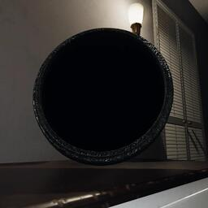
Permite forzar interacciones del fantasma al clavarle alfileres. Cada alfiler provoca una reacción paranormal y consume cordura. Si se clava el alfiler del corazón, se inicia una cacería maldita.
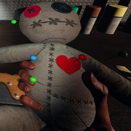
Es un mazo de diez cartas que producen efectos aleatorios al ser extraídas. Algunas modifican la cordura, otras provocan eventos paranormales, pueden iniciar cacerías o incluso revivir a un compañero. Cada carta tiene un efecto diferente.
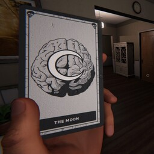
Está formado por cinco velas que, al encenderse, invocan al fantasma en el centro del círculo. El fantasma permanece inmóvil durante unos segundos, permitiendo fotografiarlo, pero luego inicia una cacería maldita.
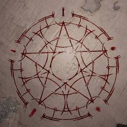
Permite pedir deseos sobrenaturales que pueden modificar la investigación, como revelar la ubicación del fantasma, recuperar la cordura o revivir a un compañero. Sin embargo, cada deseo tiene consecuencias negativas que pueden poner en peligro a los investigadores.
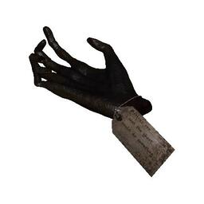
Permite hacer preguntas al fantasma para obtener información sobre su ubicación, actividad y otros datos de la investigación. Cada pregunta consume cordura y, si el jugador no se despide correctamente o rompe el tablero, puede provocar una cacería maldita.
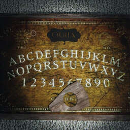
Permite escuchar al fantasma cantar una melodía, lo que ayuda a localizar su posición. Si el fantasma se encuentra cerca, puede acercarse a la caja siguiendo la música. Si se acerca demasiado o se deja caer la caja mientras está activa, puede provocar una cacería maldita.
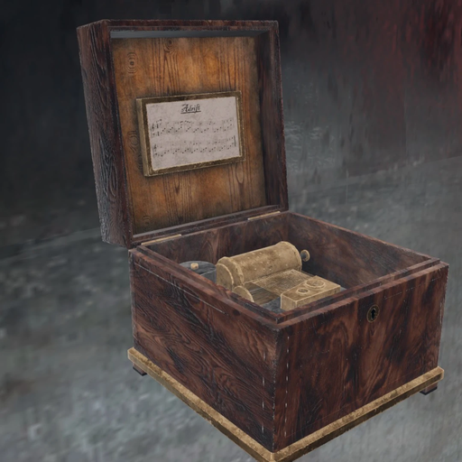
Detecta actividad electromagnética y permite identificar el nivel EMF 5.
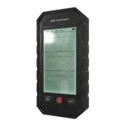
Permite comunicarse con el fantasma mediante preguntas.
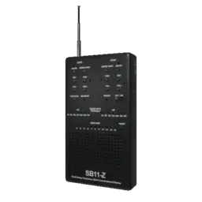
Muestra la silueta del fantasma al atravesar los puntos de luz.
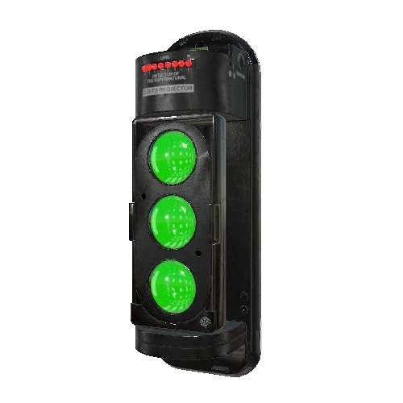
Permite detectar si el fantasma escribe o dibuja en sus páginas.
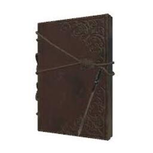
Mide la temperatura para encontrar habitaciones con temperaturas bajo cero.
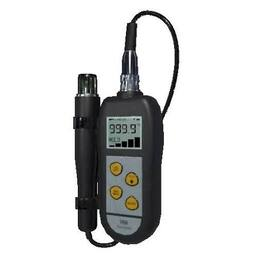
Revela huellas y marcas fluorescentes dejadas por el fantasma.
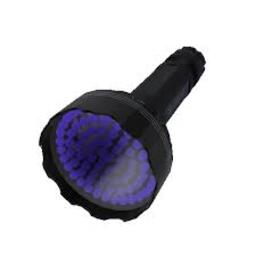
Permite observar orbes fantasma mediante visión nocturna.
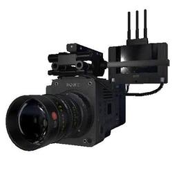